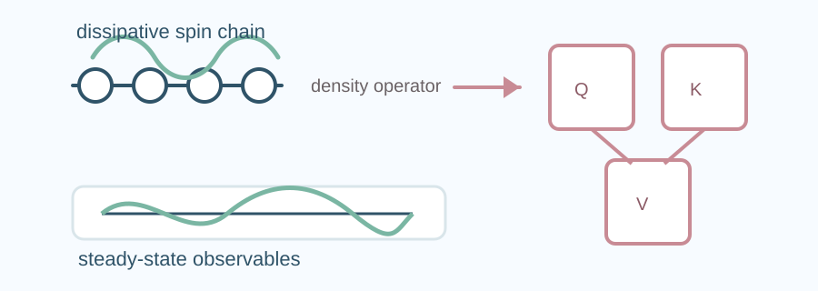
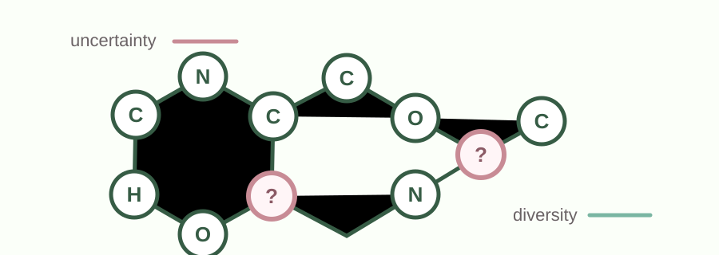
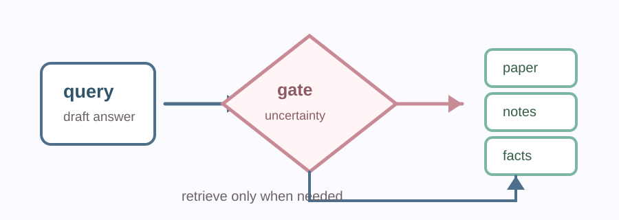
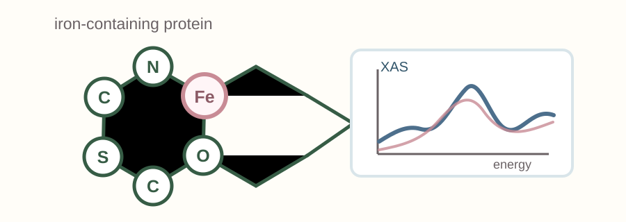

Variational Transformer Ansatz
Transformer parameterization for steady states in dissipative quantum many-body systems.


I am a Ph.D. student in Data Science at Stony Brook University, advised by Prof. Haibin Ling. I passed my qualifying exams in 2025. Previously I received my B.S. degree from University of Science and Technology of China with a major in Physics. My work connects quantum machine learning (machine-learning methods for quantum data and quantum systems), open quantum systems (quantum systems that interact with an external environment), and AI for science.
📧 Email: lu.wei.1 AT stonybrook.edu
🔬 Major: Physics and Data Science
🔗 Links: Google Scholar · OpenReview · GitHub
Quantum machine learning (machine-learning methods for quantum data and quantum systems)
Open quantum systems (quantum systems coupled to an environment)
Many-body simulation (modeling systems with many interacting particles)
AI for science (using AI methods to accelerate scientific discovery)
Reviewer: NeurIPS 2026, AAAI 2026, AISTATS 2026, ICLR 2026 FM4Science Workshop, and KDD 2026 AI4Sciences Track.
Hiking
Anime: Black Butler (Kuroshitsuji / 黑执事)
Current entry points into my work on quantum simulation, graph learning, and scientific retrieval.

Transformer parameterization for steady states in dissipative quantum many-body systems.

Geometric graph-isomorphism uncertainty sampling for label-efficient molecular property prediction.

Selective retrieval for scientific question answering using uncertainty signals before calling RAG.

Curated X-ray absorption spectrum dataset for iron-containing proteins, released for AI-driven materials workflows.
Recent and selected publications from quantum simulation, graph learning, scientific retrieval, and quantum information.
Uses uncertainty signals to decide when a scientific question-answering system should retrieve external context.
A variational transformer approach for density operators in dissipative quantum many-body steady states.
A curated spectroscopy dataset for iron-containing proteins, built for machine-learning-ready scientific workflows.

Studies antilinear structures and geometric invariance in higher-dimensional quantum systems.

I will gradually post my lecture note here, courses include quantum mechanics, statistical mechanics, basic quantum theory, etc.
📓 Quantum mechanics:
• Quantum mechanics lecture notes (01,02)
• Quantum mechanics exercises (homework 05, 2, 3)
📓 Quantum information theory:
• Quantum information lecture notes (01,02)
• Quantum information exercises (exercise 01, exercise 02,exercise 03)
📓 Quantum computation:
• Quantum computation lecture notes (01,02)
• Quantum computation exercises (exercise 01, 2, 3)
📓 Statistical mechanics:
• Statistical mechanics lecture notes (01,02)
• Statistical mechanics exercises (exercise 01, 2, 3)
📓 Neural netowrks:
• Neural network lecture notes (01,02)
• Neural network exercises (exercise 01, 2, 3)
📓 Machine learning:
• Machine learning lecture notes (01,02)
• Machine learning exercises (exercise 01, 2, 3)

Quantum mechanics
Lecture notes on 'quantum mechanics A,B'

Quantum information theory
Lecture notes on quantum information theory

Statistical mechanics
Lecture notes on 'statistical mechanics'

Quantum computation
Lecture notes on 'quantum computation'

Neural network
Lecture notes on 'foundations of neural networks'
Places I visit, activities I join, and moments along the way.
East Setauket, NY 11733 · Map
Tree-lined paths, green vegetation, power lines, and open skies.


{kind=link}
{kind=link}
{kind=link}
{kind=link}